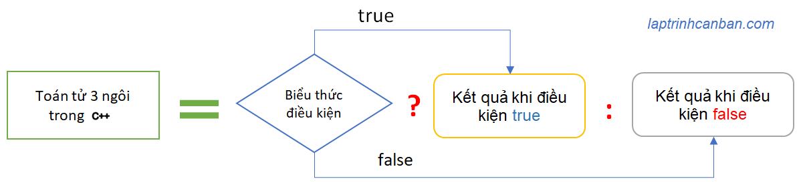

Hướng dẫn cách sử dụng toán tử 3 ngôi hay còn gọi là toán tử điều kiện trong C++. Bạn sẽ học được khái niệm toán tử 3 ngôi trong C++ là gì, cách viết cơ bản cũng như cách sử dụng toán tử 3 ngôi với câu lệnh if trong C++ sau bài học này.
Toán tử 3 ngôi trong C++ là gì
Toán tử 3 ngôi trong C++ hay còn gọi là toán tử điều kiện trong C++, là một toán tử được cấu tạo bởi ba đối số gồm biểu thức điều kiện, kết quả khi điều kiện đúng và kết quả khi điều kiện sai. Kết quả ở đây có thể là một giá trị được trả về, cũng có thể là một xử lý sẽ thực hiện sau đó tùy thuộc vào điều kiện chỉ định là đúng hay sai.
Toán tử 3 ngôi trong C++ cho phép chúng ta kiểm tra một điều kiện nào đó trong một dòng code duy nhất và trả về giá trị, thay vì phải sử dụng nhiều câu lệnh if-else, giúp cho việc code đơn giản và thông minh hơn.

Sử dụng toán tử 3 ngôi trong C++
Toán tử 3 ngôi trong C++ sẽ trả về kết quả phụ thuộc vào biểu thức điều kiện là đúng hay sai. Chúng ta sử dụng toán tử 3 ngôi trong C++ với cú pháp sau đây:
condition ? true_value : false_value;
Trong đó condition là biểu thức điều kiện, true_value là giá trị trả về khi điều kiện đúng và false_value là giá trị trả về khi điều kiện sai.
Ví dụ, chúng ta kiểm tra một số có bằng 10 hay không như sau:
Cách viết thông thường:
|
Cách dùng Toán tử 3 ngôi:
|
Với cách dùng toán tử 3 ngôi, biểu thức điều kiện ở đây là n ==10, và nếu điều kiện đúng, giá trị OK sẽ được trả về. Ngược lại nếu điều kiện sai, giá trị NG sẽ được trả về.
Một ví dụ khác, chúng ta kiểm tra một số là chẵn hay lẻ trong C++ và thực hiện các xử lý tương ứng như sau:
Cách viết thông thường:
int x = 101; |
Cách dùng Toán tử 3 ngôi:
int x = 101; |
Tương tự thì trong cách viết toán tử 3 ngôi này, biểu thức điều kiện là x % 2 == 0, và nếu nó đúng thì xử lý x + 2 được thực hiện và gán kết quả vào s. Ngược lại nếu nó sai thì xử lý x - 2 được thực hiện và gán kết quả vào s.
Mã mẫu
Sau đây hãy cùng xem toàn bộ mã của chương trình sử dụng toán tử 3 ngôi hay còn gọi là toán tử điều kiện trong C++:
|
Tổng kết
Trên đây Kiyoshi đã hướng dẫn bạn về cách sử dụng toán tử 3 ngôi trong C++ rồi. Để nắm rõ nội dung bài học hơn, bạn hãy thực hành viết lại các ví dụ của ngày hôm nay nhé.
Và hãy cùng tìm hiểu những kiến thức sâu hơn về C++ trong các bài học tiếp theo.
URL Link
https://laptrinhcanban.com/cpp/lap-trinh-cpp-co-ban/toan-tu-trong-cpp/toan-tu-3-ngoi-trong-cpp/
HOME › lập trình c++ cơ bản dành cho người mới học lập trình>>06. toán tử trong c++